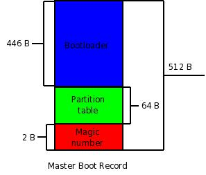

10$ question. Sometime ago you have created backup of your systems Master Boot Record (MBR). Now, after some change, you noticed you did a fatal mistake and your partition table is corrupted and you need to recover it from the backup you created, but you are not sure if it is the correct version. The question is, what is the easiest way to read partition table from the backup of your MBR? No, Hex editor is not the easiest way to do it (and it is bad for your eyes :)). I wonder how many of you said ‘file’ command? Yes, magical file command is able to read the data from the mbr dump and prints you the actual partition table. Here is an example from my laptop.
# file mbr.bin
mbr.bin: x86 boot sector;
partition 1: ID=0×83, active, starthead 1, startsector 63, 40949622 sectors;
partition 2: ID=0×82, starthead 254, startsector 40949685, 2088450 sectors;
partition 3: ID=0x8e, starthead 254, startsector 43038135, 74172105 sectors, code offset 0×48
As you can see I have only 3 partitions on the disk. First one has type 0×83, which is HEX id for ext3 type of partition and it is my / partition (you don’t see it here, but I know it :)). It is also active partition, it means that it is used for booting the system. You can also see the size of the partition in sectors. Knowing that one sector has length of 512 bytes you can easily find out the size of the partition.
# echo $(((40949622/2)/1024))
19994
# df -k /
Filesystem 1K-blocks Used Available Use% Mounted on
/dev/sda1 19833488 6504676 12305072 35% /
That’s it, correct. :)
Next partition is 0×82 which is swap partition. And last partition is 0x8e which is id for Linux LVM partition.
While I am here, I could also explain what is MBR and how it is used.
Main Boot Record resides in first 512 bytes of your bootable disk. Besides partition table it also holds bootloader and something called a magic number. As you can see on the picture, bootloader takes the biggest part of MBR, whole 446 bytes. During the boot process BIOS search for a bootable devices attached to your system and once it finds it it looks at the MBR and loads the bootloader, also called primary bootloader. Primary bootloader looks at the partition table inside MBR (next 64 bytes after the bootloader) and searches for an active partition. When it finds active partition it loads the secondary boot loader from that partitions boot record which, in turn, loads the kernel, and so on.
Magic number is used for sanity check of your MBR. It holds only 2 bytes and should be 0xAA55.
So, in short words, MBR is used to easily locate and load kernel from the correct device. (It is also used by your operating system to find the layout of the disk, but that is another story.)
PS: You can create a dump of your MBR by issuing next command:
# dd if=/dev/sda of=mbr.bin bs=512 count=1
Replace /dev/sda with the correct address to your disk.
PS 2: Sorry for bad quality of the MBR scheme, but I didn’t have much time to work on it and I am not a graphic designer. :D
$ hexdump -C -s 446 mbr
000001be 80 01 01 00 07 fe ff ff 3f 00 00 00 6c 4e 01 05 |……..?…lN..|
000001ce 00 fe ff ff 83 fe ff ff ab 4e 01 05 c9 34 02 00 |………N…4..|
000001de 00 fe ff ff 05 fe ff ff 74 83 03 05 4d 53 3f 20 |……..t…MS? |
000001ee 00 00 00 00 00 00 00 00 00 00 00 00 00 00 00 00 |…………….|
000001fe 55 aa |U.|
00000200
$ file mbr
mbr: x86 boot sector, Microsoft Windows XP MBR, Serial 0×83988398;
partition 2: ID=0×83, starthead 254, startsector 83971755, 144585 sectors;
partition 3: ID=0×5, starthead 254, startsector 84116340, 541021005 sectors
Hmmm, why did it skip the info on partition 1 here?
Also of interest would be a HOWTO on reconstructiong the MBR without a MBR backup (done that a couple of times), and to note that MBR backup won’t save your logical partitions from oblivion.
As we found out during our Jabber conversation, the problem seems to be in bad magic file your file command is using.
# file vrzambr
vrzambr: x86 boot sector, Microsoft Windows XP MBR, Serial 0×83988398;
partition 1: ID=0×7, active, starthead 1, startsector 63, 83971692 sectors;
partition 2: ID=0×83, starthead 254, startsector 83971755, 144585 sectors;
partition 3: ID=0×5, starthead 254, startsector 84116340, 541021005 sectors
The weird thing here is that your file package is newer than mine. :) It skips NTFS partition and moves straight to the first Linux partition. I am not a big conspiracy fan, but this makes you think. :)
BTW, I invite you to, as a guest author on this blog, write a small howto about reconstructing the MBR without having the backup. It could be very useful. :)